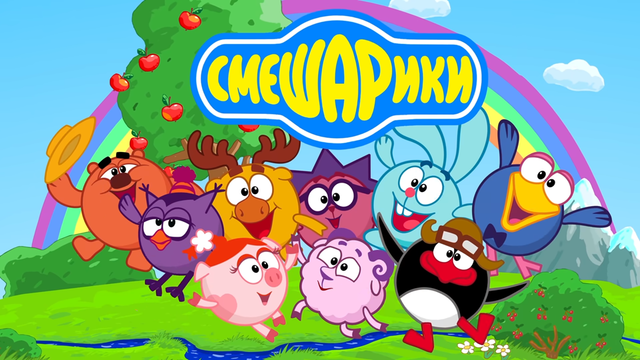

Мультики для ребенка — окно в мир. Они знакомят с нормами этики, морали, прививают определенные модели поведения. Развлекают и дают отдохнуть от развивающих занятий. С их помощью дети познают многообразие мира, учатся решать жизненные задачи разными способами, обдумывать свои действия, различать добро и зло. При этом исследования подтверждают, что есть и негативное влияние мультиков. Поговорим обо всем по порядку..

Польза
Хорошие мультфильмы — настоящие помощники родителей в воспитании ребенка. Если правильно организовать режим просмотра и с умом подобрать репертуар, они станут мощным элементом развития: Мультики заставляют думать, делать логические выводы, фантазировать, искать причинно-следственные связи. Нередко малыши узнают новые слова и их значение, термины и факты благодаря любимым героям. Занимательные сюжеты и разные персонажи расширяют кругозор и умножают знания. При просмотре мультфильмов дети становятся виртуальными соучастниками событий, примеряют социальные роли, дают оценку героям и их поступкам. Ребята получают жизненный опыт: играть с огнем — нельзя, обижать других — плохо, помогать и заботиться — благородно.
Да и вообще, мультики — это интересно и занимательно. Хорошая добрая картина может стать отличным способом провести досуг. Телесеанс успокоит разбушевавшегося малыша, отвлечет, переключит его внимание. А мамы и папы смогут посвятить немного времени домашним делам. Чтобы мультфильмы приносили пользу, они должны соответствовать возрасту и интересам детей. Следует всегда предварительно просматривать их самому для определения смысловой нагрузки конкретного видео. Время с телевизором или гаджетом стоит ограничивать. Мелькание изображений на экране и некоторые сюжеты перевозбуждают нервную систему маленьких зрителей.
Вред
Мультфильмы могут быть не только полезными. Вероятный вред условно делится на физиологический и эмоционально-психический.

На первый план выходит нагрузка на позвоночник и глаза. Если ребенок очень долго и близко смотрит в экран, особенно если качество картинки плохое, портится зрение. Неудобные и нефизиологические позы приводят к проблемам с осанкой, нарушению подвижности плечевых суставов и другим заболеваниям.
Повышенная раздражительность и возбудимость, головные боли, усталость тоже могут быть следствием длительного просмотра мультиков. Психологи говорят, что некоторые картины способны не просто замедлить или нарушить, а остановить развитие ребенка. Это касается как содержания, так и графики/анимации. Зрительные образы оказывают мощное воздействие.